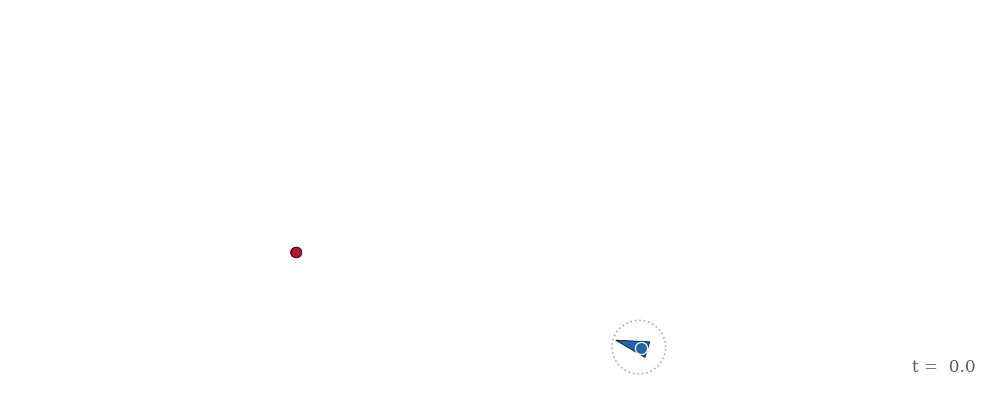

The Homicidal Chauffeur
Derivations, not just simulations: teaching applied mathematics with scientific Python

Can a fast car with a bounded turning radius always catch a slower but perfectly agile pedestrian? Rufus Isaacs posed this pursuit-evasion problem at RAND in 1951, and it became the founding example of differential game theory. This project works the problem end to end in open scientific Python: every governing equation is derived symbolically with SymPy, then lambdified into the NumPy/SciPy code that simulates and plots it — so the chain from mathematical claim to rendered figure is executable and inspectable at every link, and an automated test suite cross-checks the derivations against the numerics.
The artifacts here trace the arc of the work. The interactive notebook came first — an open-ended exploration of the idea — and became the basis for a SciPy 2026 talk submission. When the talk was accepted, the slides were built from the same notebook. And because the work aligns so directly with the SciPy Proceedings' mission of executable, reproducible, version-controlled research artifacts, it also grew into an executable paper developed to the proceedings guidelines. Start wherever suits you.
-
Interactive notebook
The original, complete treatment: twelve sections from kinematics through optimal strategies and the singular-surface taxonomy to deadlock, with SymPy derivations cross-checked by 61 automated tests. A marimo notebook that runs entirely in your browser — sliders and all.
Open the notebook → -
Talk slides
The SciPy 2026 talk as an interactive deck: seventeen slides that open with a chase no intuition predicts, then reveal the derivation machinery behind it. Live sliders included — the figures respond as you present.
Open the slides → -
Paper
Derivations, Not Just Simulations: Teaching Applied Mathematics with Scientific Python — the SciPy Proceedings paper built from this notebook, focused on the executable derivation pipeline and the verification culture around it. Currently in review.
Read the paper (PR #1206) →* -
Talk video
The recording of the SciPy 2026 talk, now on YouTube: the walk from the chase animation through the executable derivation to the optimal pursuit.
Watch the talk →
* The paper link currently points to the submitted pull request; it will migrate to the canonical SciPy Proceedings page when it goes live.